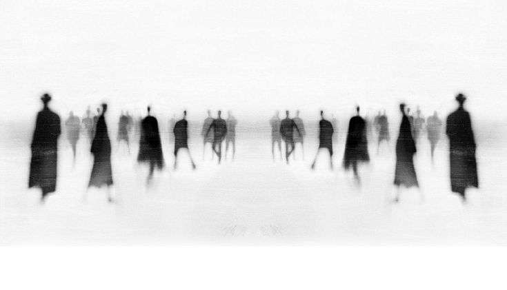

portfolio
Présentation

Je suis étudiante ingénieure en Creative Technology, entre design, ingénierie, création et expérimentation.
Mon parcours explore les liens entre objets, matière, usages et récit visuel. J’aime concevoir des projets qui mêlent approche technique, sensibilité esthétique et observation du réel.
L’art, la photographie et l’aventure occupent aussi une place importante dans ma démarche. Ils m’aident à transformer des lieux, des expériences et des détails du quotidien en projets sensibles et concrets.
Imaginer des objets, des systèmes et des expériences à la croisée de l’art, de la technique et des usages humains.
Projets
Parcours
2019 — 2022
Fondations
Formation scientifique, acquisition des bases en mathématiques, physique et raisonnement technique.
2022 — 2025
Cycle ingénieur
Cycle ingénieur, projets interdisciplinaires, design, prototypage, programmation et innovation.
2026 - Aujourd'hui
Exploration
Stage, recherche appliquée, projets environnementaux, design expérimental et systèmes connectés.
découverte du moment
ce que j’explore en Master 2
Cette année, mon projet d'école s'inscrit dans des situations concrètes et de besoins réels, pour imaginer des objets, systèmes et expériences à la fois techniques, sensibles et utiles.
compléter compléter compléter compléter compléter compléter compléter compléter compléter compléter compléter compléter compléter compléter compléter compléter compléter compléter compléter compléter
Contact